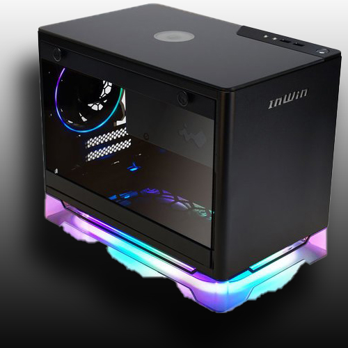
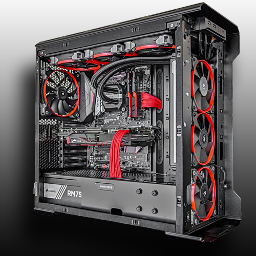
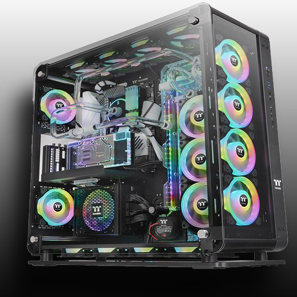

Our mission is to offer quality Personal Computer Builds for home and business users at a price that everyone can afford.
With many years experience working in PC Building, we believe that our builds will meet your expectations!
|  |
Mini-ITX PC BuildMini-ITX is a compact motherboard configuration designed to support relatively low-cost computers in small spaces such as in automobiles, set-top box es, and network devices. The Mini-ITX can also be used in making thin client computers. ... The Mini-ITX is very small, measuring 170 mm x 170 mm (6.75 inches x 6.75 inches). |
Mid-Tower PC BuildGenerally speaking, mid tower cases are shorter/smaller than full tower cases which means they'll have smaller motherboards, lesser fans, and expansion slots. Most mid-towers measure 18 inches or more in height, while most full tower cases measure 22 inches or more. |
 |
|  |
Full-Tower PC BuildFull-size tower cases are typically larger in volume than desktop cases, with more room for drive bays, expansion slots, and custom or all-in-one (AIO) water cooling solutions. ... It extends the length of the mainboard to accommodate four graphics cards with dual-slot coolers. |